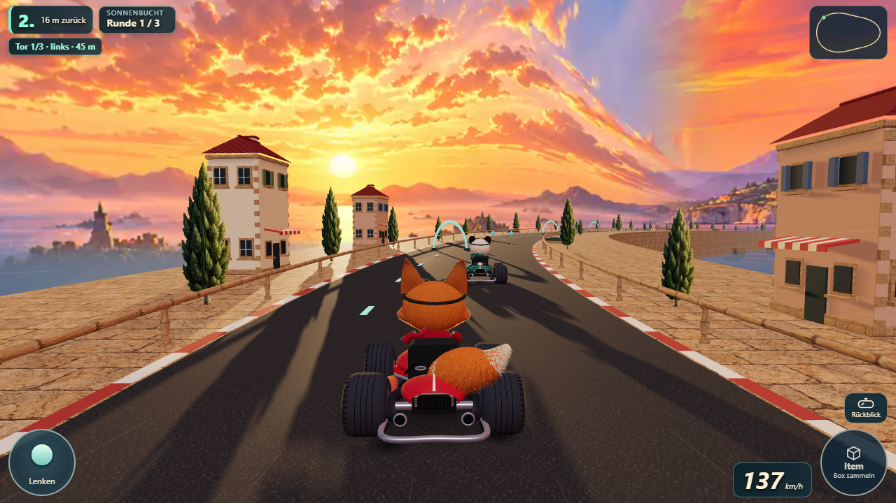

Joy-Kart · Grafikvergleich
Wähle eine Fahransicht und wechsle zwischen beiden Fassungen. Szene, Rennzustand und Bildausschnitt stimmen überein.

Wähle eine Fahransicht und wechsle zwischen beiden Fassungen. Szene, Rennzustand und Bildausschnitt stimmen überein.
